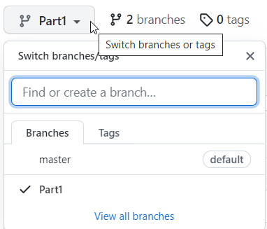
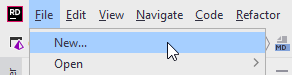
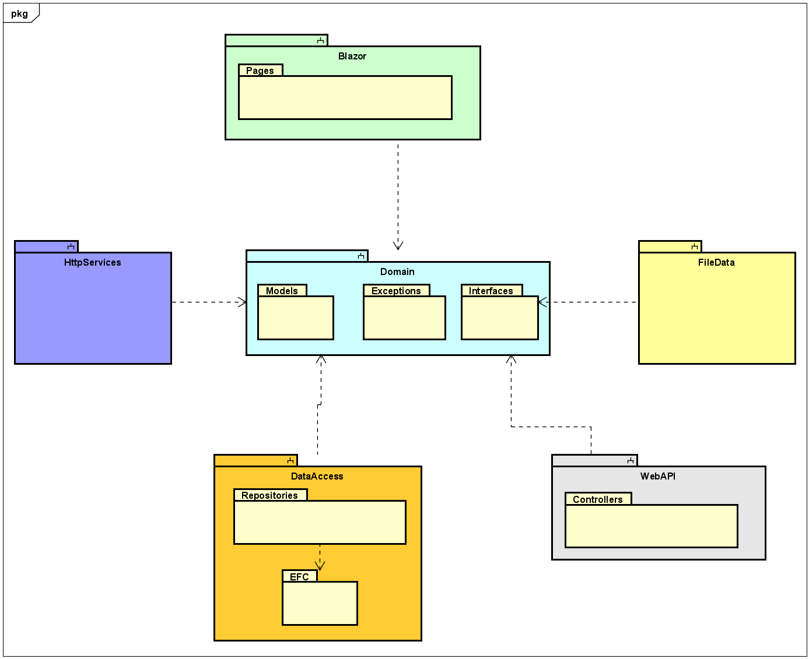
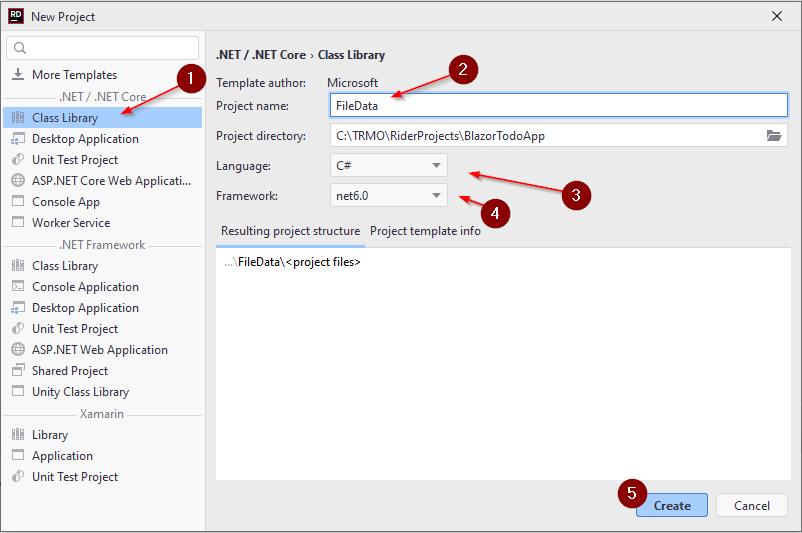
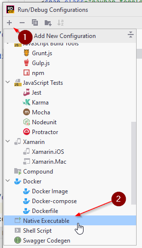

- 1 Introduction
- 2 New solution
- 3 Project structure
- 4 Domain component
- 5 Model classes
- 6 More components
- 7 Blazor component
- 8 File data component
- 9 File context
- 10 Data access interfaces
- 11 Data access implementation
- 12 Adding services
- 13 Viewing todos
- 14 Navigate to page
- 15 Test your app
- 16 Todos page code
- 17 Todos page view
- 18 Test todos overview
- 19 Clean up
- 20 dotnet watch
- 21 Todo validation
- 22 Add todo page
- 23 Add todo view
- 24 Add todo styling
- 25 Test add todo
- 26 Removing a todo
- 27 Completed status
- 28 Filtering data
- 29 Filtering data problem
- 30 Editing a todo
- 31 Edit from overview
- 32 Status
- 33 Components
- 34 Toggle component
- 35 Popup component
- 36 Popup usage
- 37 Update todo popup
- 38 Conclusion
Introduction

This tutorial will initially introduce you to Blazor-server. You will create a web app to manage todo items. You can consider it a very simple Trello clone.
You will create basic features, such as
- creating a Todo
- viewing all
- searching
- modifying
- deleting
Initially the data will be saved in a file, as json format.
In later sessions, we will expand upon the tutorial, changing it to a client server system using REST, and lastly adding a real database, using Entity Framework Core (EFC).
The entire collection of Todo tutorials aim to perfectly prepare you for the exam.
All source code will be on GitHub, so you always have a reference, if you're stuck.
Find it here on GitHub
Different parts of the tutorial in the future, will be in different branches:

Creating a new solution
For previous exercises, you have most likely put them all in the same solution, and created a new project for each exercise.
This tutorial will be a slightly larger exercise, perhaps sort of a mini-SEP. As such, we wish to have a better code-structure for our application. You have been taught the SOLID design principles. They usually apply to single methods, or classes. In this project we will attempt to apply Clean Architecture, which is basically applying the SOLID principles on a larger scale.
Therefore, we're going to need a new, empty solution. You can name it TodoApp.
Follow the steps below to create a new solution:

Clicking New... will open the dialog for creating a new solution, see below.
- Select Empty Solution
- Give your solution a name. I have multiple Todo apps by now, so I have called mine BlazorTodoApp
- You can choose to add a git repository, if you wish.

Your new empty solution should now look like this:
I.e. it's pretty empty. Next up, we will talk about the solution structure.
Project structure
You have previously heard about layered systems on second semester, a simple example could look like this:

The above would be a basic structure for a local desktop app, e.g. SEP1, roughly sketched.
In SEP2 you expanded to a client/server system, using JFX. Such a system could be illustrated in a layared diagram like below:

The same approach applies: Layers have different responsibilites, and each layer is separated by interfaces. In SEP2 you probably divided layers into different packages. The next step is to separate into components. I will steal the following explanation from Robert C. Martin's book "Clean Architecture":
Components are unit of deployment. They are the smallets entities that can be deployed as part of a system. In Java, they are jar files. In .NET they are DDLs.
In Java, components are often organized in modules. In .NET, components can be organized into various projects. Components can be considered a bit like lego-building blocks, with the intention that you used these blocks til construct the system. They provide modularity, so building-blocks can easily be swapped out.
This means your .NET app could be structured using an approach like below, roughly sketched. Notice that some "packages" have a little upside-down two-pronged fork above the name. This indicates a "sub-system" in Astah, and we use it to represent components/projects/modules. Inside each, you can have packages. Inside packages, you find interfaces, classes, and the like.

This could be an example of your entire solution, at the end of the semester. You will probably have these 6 components:
- Blazor - The UI. It will depend on interfaces in the Domain
- Domain - Holds domain model classes, and certain central interfaces. Potentially custom exceptions, but probably not in our case
- FileData - Implements interface from Domain. Will provide functionality to store data in a file
- HttpServices - Will contain client classes, which can contact a server
- WebAPI - This is the server
- DataAccess - Similar to FileData, but data will be stored in a database
The first tutorial will cover 1, 2, and 3. We will then expand later with 4 and 5. Then lastly 6.
In this first part we will start with Blazor, Domain and FileData. You may notice there is no component for business logic, simply because this app is rather simple. We are also going to put most interfaces into the Domain.Interfaces. This is also a simplified approach.
In your SEP3 you're going to need a component for logic. Sometimes this component is called Application.
The point is that these projects (components) are separated, each handling their own responsibilities. It will feel like overkill in this tutorial, because each component will be pretty small, containing only a handful of classes. But this is just practice.
There are different approaches on how to structure these components. We will do "by layer", because that is simpler. However, in your professional career, you will probably encounter a separation "by feature". This is an often recommended approach, however much more complicated. Basically, if you want to try it out for SEP3: Each new user story, you implement, will go into a new component.
This may seem a bit overwhelming, but we will take it step by step, holding hands along the way. You will be safe. No worries.

The Domain component
First, we need the model classes. In this first iteration of the tutorial, we will just need a Todo object. Later we might add Users, or multiple todo-list.
New project (component)
Create a new Class Library project, by right-clicking your solution:

This will open a familiar dialog, where you can create a Class Library 1. Give the project a name 2, I have called mine Domain, in some examples it is called Entities. In your case, you can probably only select net6.0 3. Finally press Create 4.

A Class Library is a type of project which cannot be run, it instead contains functionality. All NuGet packages are generally libraries with functionality, you can import into your system. Similar to some Jar files in Java, however, other Jar files can actually be executed. In .NET we distinguish between .exe files: executables, and .dll files: dynamic link libraries.
Your Domain component will just contain the domain model classes, there is nothing to run. If you make custom Exceptions, they could also go here. We will also add certain interfaces, shortly.
This component will contain things that are needed across the application.
Todo model class
You can start by deleting the default class that comes with the project: Class1.cs.
Inside your Domain project, create a new directory, name it Models. In here we put the model classes.
Create a new class, call it Todo:

The Todo class needs properties for the data, a Todo should hold:
public class Todo
{
public int Id { get; set; }
public int OwnerId { get; set; }
public string Title { get; set; }
public bool IsCompleted { get; set; }
public Todo(int ownerId, string title)
{
OwnerId = ownerId;
Title = title;
}
}
We have created a constructor, which only takes two of the four properties as arguments. The intention is that the Id should be set automatically by whatever class persists the data, and you cannot create a Todo, which is initially already completed, so we just default IsCompleted to false, by not setting it.
We might consider adding a feature of reassigning todos to other users. At a later point.
A tale of three components
We are going to need two more components for this first part of the tutorial: a Blazor-server component, and another component to save data to a file. The relationship between the components will be like below:

Both Blazor and FileData knows about Domain, but neither knows about the other. Because of this separation, we can at a later point easily swap out which implementation of ITodoHome Blazor uses. Initially it will be the file storage functionality, but later it will be a client, which contacts a server.
There is a small detail that we will have to require Blazor to know about the FileData component, that cannot be avoided, but it will have a microscopic impact, and it is still very easy to remove FileData, and input something else. We'll get back to this later.
Creating blazor-server component
First, we create the blazor-server component. Right-click your solution folder again, to add a new project:

- ASP.NET contains everything web, within .NET
- Give your project a name
- Select the type. There is also something called Blazor wasm. But we use Blazor Server
- No authentication, we will create our own later
- No docker support
- Create the project
Wonderful.
We will leave the component for now, and move on to data access.
File data component
Create a new project again, this time a library:

Again, delete the Class1.cs.
We then need to add dependencies to other components, so that the FileData component can use classes from other components. Inside the FileData component, right-click the Dependencies:

Then select the Domain component 1, and click Add 2.

This means your FileData component can now access namespaces and classes in the Domain component.
FileContext
We will now create the class, which can save and retrieve data. We will be serializing objects to JSON, and write to a file. It's a pretty simple substitute for a database.
Inside the FileData component: Create a new directory, DataAccess.
Inside this directory, create a new class, call it FileContext:

Below, the content of the FileContext will be explained. The final version of the class can be found here
Fields
You need to define the file, which should hold the data. And we need a collection of Todo objects, along with a property to get the todos:
private string todoFilePath = "todos.json";
private ICollection<Todo> todos;
public ICollection<Todo> Todos
{
get
{
if (todos == null)
{
LoadData();
}
return todos;
}
}
We use a collection, because this class should not have get-methods to access objects at an index. This is to simulate how you will work with a database in the future.
We use lazy instantiation of the todos collection. This will be clear, whenever any changes are saved. This is also to simulate how you will work with the database in the future.
Constructor
Then we need a constructor. We wish to insert some dummy data into the file, if nothing exists, just so we have something to work with. The constructor looks like this:
public FileContext()
{
if (!File.Exists(todoFilePath))
{
Seed();
}
}
What's going on?
Lines:
3 Here we check if there is already a file at the given path.
5 If there's no file, we call the Seed()method. This will be implemented shortly. Its purpose is to insert dummy data.
7 We load the data from the file into the collection.
We now need the Seed() method. It looks like this:
private void Seed()
{
Todo[] ts = {
new Todo(1, "Dishes") {
Id = 1,
},
new Todo(1, "Walk the dog") {
Id = 1,
},
new Todo(2, "Do DNP homework") {
Id = 3,
},
new Todo(3, "Eat breakfast") {
Id = 4,
},
new Todo(4, "Mow lawn") {
Id = 5,
},
};
todos = ts.ToList();
SaveChanges();
}
In the above method an array of Todos are created. Notice here, we manually set the Id of each todo. We only do this for this specific dummy data.
In the end the array is stored in the todos field. And then we call a currently-non-existing method, SaveChanges.
Save changes
The purpose of this method is to take the content of the Todos field, and put into the file.
public void SaveChanges()
{
string serialize = JsonSerializer.Serialize(Todos);
File.WriteAllText(todoFilePath,serialize);
todos = null;
}
Later, when we work with databases through Entity Framework Core, you will also need to call SaveChanges after interacting with the database. So, we practice the workflow here.
Load data
We need a method to read from the file, so we can retrieve data.
private void LoadData()
{
string content = File.ReadAllText(todoFilePath);
Todos = JsonSerializer.Deserialize<List<Todo>>(content);
}
What's going on here?
The method is private, because this class should be responsible for determining when to load data.
We read all the content of the file, it returns a string.
Then that string is deserialized into a List<Todo>, and assigned to the field variable. ICollection is an interface of List, so we can make this assignment.
Accessing data
Finally, we need a way to actually get the data. But, we already have that in our property. This is, again, to simulate the way you'll interact with the database in the future.
The next step will be to add a Data Access Object with the usual CRUD operations.
The final version of the FileContext can be found here
Data access interfaces
As mentioned previously, our Blazor app will initially get data from the just created FileContext. Later we wish to change this, so the data comes from a server. I.e. we wish to swap out the implementation of these interfaces.
In order to not have to change the dependencies of the Blazor component, we put the interfaces in the Domain component. It will eventually look something like this:

We currently have the Blazor, Domain, and FileData components. In a later tutorial, we will expand with the HttpServices component. At that point, we wish to swap out which implementation the Blazor component uses.
Because we have applied the dependency inversion principle, it should be little work to swap from using file storage, to using a client to get data from a server.
But first, we need to define the interface.
ITodoHome
Inside the Domain component, create a new directory. I have called mine "Contracts". "Interfaces" imply the same thing. But interfaces are essentially a contract between two classes: Class A, which needs some functionality, and Class B which provides some functionality. The interface is then a Contract, so class B knows what functionality to deliver, and Class A knows what functionality it will get.
Inside the Contracts directory, create a new interface, ITodoHome. I have used *Home here, other choices could have been DAO, Service, Repository, Manager, etc. Pick either one.
using System.Collections.Generic;
using System.Threading.Tasks;
namespace Blazor.Services;
public interface ITodoHome
{
public Task<ICollection<Todo>> GetAsync();
public Task<Todo> GetById(int id);
public Task<Todo> AddAsync(Todo todo);
public Task DeleteAsync(int id);
public Task UpdateAsync(Todo todo);
}
We are using asynchronous programming, so all methods returns a Task, and method names are suffixed 'Async'.
We have here the standard CRUD operations. Notice how the AddAsync method returns a Todo object. This is because the Todo object is finalized when storing it, i.e. it gets an Id assigned from the FileData component, at some later point. We return it, so the finalized object can be displayed to the user, should we want to.
Next up, we need the adapters to let the Blazor app get data from the FileContext. These are our Data Access Objects.
Data Access Object
We currently only have one type of domain object, so we just need a single DAO class to provide CRUD operations on Todos.
The finished class is found here.
This DAO should be located in the FileData component, either put it in the DataAccess directory or create a new.

This class, TodoFileDAO, should implement the ITodoHome interface from the Domain component, and provide implementations for the
methods.
First, we need access to a FileContext instance. We will just receive and assign this in the constructor:
public class TodoFileDAO : ITodoHome
{
private FileContext fileContext;
public TodoFileDAO(FileContext fileContext)
{
this.fileContext = fileContext;
}
// ...
We use constructor dependency injection for the FileContext, so we don't have to manually create a new instance. This is
generally a good approach.
Remember SDJ2 and MVVM:
Controllers, VMs, and Models got what they needed through constructors. We will get the framework to handle this dependency
injection for us.
Note about async and Task return types
The interface, ITodoHome, has defined a couple of methods, all of which has return type Task or Task<T>. This is because in a later tutorial, we will add a database instead of file storage.
And when working with the database, we can do many of the interactions asynchronously.
For this File storage, i.e. FileContext of FileDAO, however, there isn't much we can do, or is worth doing, asynchronously. We must still return Task, but it is not necessary to make the methods async, given that they do not perform anything asynchronous.
Instead, we must wrap the returned value in a Task. That is what is happening in the return statements of the methods described below.
Getting all todos
We'll start with the GetAsync() method:
public Task<ICollection<Todo>> GetAsync()
{
ICollection<Todo> todos = fileContext.Todos;
return Task.FromResult(todos);
}
Here we just retrieve the Todos from the fileContext, and return the collection. The method is marked async, even though we don't have any asynchronous code here.
This is future proofing, because when we change to retrieving data from a server, that will be asynchronous.
Get todo by id
This method should return a Todo by its id:
public Task<Todo> GetById(int id)
{
Todo byId = fileContext.Todos.First(t => t.Id == id);
return Task.FromResult(byId);
}
The First() method takes a predicate and returns the first Todo, which matches the criteria. We know the Id is unique, so there should be no problems here.
Add Todo
In this method we need to implement the functionality of auto-setting the Id of the provided Todo item. The method looks like this:
public Task<Todo> AddAsync(Todo todo)
{
int largestId = fileContext.Todos.Max(t => t.Id);
int nextId = largestId + 1;
todo.Id = nextId;
fileContext.Todos.Add(todo);
fileContext.SaveChanges();
return Task.FromResult(todo);
}
First, we use the Max(...) method to find the largest value of Id in the collection.
Then we create the new Id, by incrementing the current largest Id by 1.
We assign that Id to the provided todo.
We add the todo to the fileContext.
We call SaveChanges() so that the Todos are written to the file.
Finally, we return the finalized todo object, now with a correct Id, in case it is needed.
The other methods
Give the other methods a try on your own, and look up the solution on GitHub if needed.
DeleteAsync: Remove a todo from the collection of todos, based on the given id, in the fileContext, remember to call SaveChanges().
Hint: this method does not return any value, but it still must return a Task. You can do this with return Task.CompletedTask.
UpdateAsync: First find the existing Todo, by using todo.Id. Take the OwnerId and IsCompleted from the argument, and overwrite the values of the Todo from the fileContext. Then call SaveChanges()
Adding services
Now that we have our data persistence in place, we are ready to start working on the Blazor side of things.
Managing component dependencies
The first step is to make sure that our Blazor app knows about our ITodoHome, and TodoFileDAO so that we can use it to persist data.
Now, in the Program.cs class of the Blazor component, we can register services, so that the framework can create these as needed, and inject into whatever class needs a given service. This is the dependency injection, the Blazor framework can handle this automatically for us. That's pretty nifty. It makes it easier to retain loose coupling.
We encounter a problem here. In order to register a service of type FileContext and TodoFileDAO, the Blazor component must know about the FileData component.
This is the minor hiccup, I mentioned earlier. In order to reference classes from FileData, Blazor must know about FileData.
We would have liked to avoid this knowledge, but it is only the Program.cs class which will be "tainted" like this, and that's okay.
We need a dependency from Blazor to FileData:

Adding the services
Then, in Program.cs we need to add services. It goes like this:

Now, whenever a page request a class, which has been added as a service, the framework will create that for us. If we request a class, which hasn't been added, the framework will give an error, saying it was unable to create the requested service.
Notice we use AddScoped<...>, this is a good default approach. Adding a singleton can sometimes cause problems, if you are not careful.
With the line
builder.Services.AddScoped<ITodoHome, TodoFileDAO>();
we are saying, that whenever the blazor app requests an instance of ITodoHome, it will get a TodoFileDAO. In the future, when we wish to provide a different implementation, we just need to change this single line of code, and our entire app will get data from a server somewhere, instead of a file.
Multi-threading problem?
In our case here, we could potentially have two clients, who wishes to create Todo items at the same time,
cause two different instances of FileContext to attempt to read from and write to the same file. That will cause an error.
We could use a singleton and synchronize the FileContext class to make it thread safe,
but that's out of scope of this exercise, given that the FileContext is just temporary.
This fix is left to the reader to implement.
Viewing todo items
We are now ready for our first UI element. We need a page, where we can view existing Todo items. Select Blazor Component, not the Page!

This will open a new dialogue, where you can type in the name (e.g. Todos) of the new page, and pick either Component or Page.
Select Page. It doesn't make much of a different, except when selecting Page, the page directive is added at the top: @page "/Todos".
This means we can navigate to this page with a URI.
You should get an empty page like this:
@page "/Todos"
<h3>Todos</h3>
@code {
}
This is your new Todos overview page. Not much functionality yet.
Line 1 is the page directive, as mentioned above. You could run the app, and type in "/Todos" at the end of the URI. That should open this page.
Lines 2-3 is the view part, here you will define the html to setup what the view should look like. We will spice it up with razor syntax, which is embedded C# code. This is used to generate parts of the page. We will get back to this. In MVVM terms, this is the view.
Lines 4-6 is your code block. This is your view-model, essentially. Here you put fields to manage the state of the view, e.g. what is enabled, visible, shown. It's also here, in fields, we hold the data to be shown.
We don't have the model, which you are used to from SDJ2, but in Blazor you can basically consider it to be any type of service-interface, your code block uses. That will in a short while be the ITodoHome interface.
Navigate to todos overview
Changing layout
The default blazor app comes with the left side navigation bar. For this tutorial, we will just expand on that. You can, however, rework the entire layout of the app at a later point, if you wish.
This is done in the file MainLayout.razor

In this file you can see a bit of html, which define the layout. You will also notice the <NavMenu/>, which is a reference to the NavMenu component, the look and functionality of which, is defined in the NavMenu.razor file. The NavMenu is a component, i.e. a piece of UI, which can be inserted into other pages or components.
It can be very beneficial to organize UI pieces into components for re-usability.
In MainLayout.razor you will also notice @Body. This must always be present, if you start reworking the layout. This variable will be replaced with whatever page you open.
Adding to NavMenu
Open the NavMenu.razor:
As mentioned, this defines the left hand side navigation menu. We want to add a new menu item, so we can open the Todos overview.
Inside NavMenu, locate the following piece of html:
<div class="@NavMenuCssClass" @onclick="ToggleNavMenu">
<nav class="flex-column">
<div class="nav-item px-3">
<NavLink class="nav-link" href="" Match="NavLinkMatch.All">
<span class="oi oi-home" aria-hidden="true"></span> Home
</NavLink>
</div>
<div class="nav-item px-3">
<NavLink class="nav-link" href="counter">
<span class="oi oi-plus" aria-hidden="true"></span> Counter
</NavLink>
</div>
<div class="nav-item px-3">
<NavLink class="nav-link" href="fetchdata">
<span class="oi oi-list-rich" aria-hidden="true"></span> Fetch data
</NavLink>
</div>
</nav>
</div>
The divs marked with class=nav-item px-3 each contain a nav menu item. Duplicate the last one and modify it like this:

The class oi-list-rich is the icon:

You can find more included icons here and here.
Rider is also pretty good at auto completing html. E.g. for more icons place your cursor here:

And press ctrl + space, assuming default IntelliJ Keymapping.
Addiditionally, you can click on an html tag (or in general just about anything) and press ctrl+q to get more information about something, a class, a tag, a method, a variable.
TESTING, TESTING, 1, 2, TESTING
Let us see what the current app looks like. It is not particularly interesting, but let us just verify the Todos page is working, and you can navigate to it.
Now, in .NET6, the Program.cs no longer has an explicit main method. You are probably used to having a little green play arrow next to the main method in IntelliJ.
We have that for explicit main methods in Rider too. But at the time of writing, not for implicit main methods.
Instead, you can right click the Blazor project folder and run the project:
Alternatively, up to the right of the editor, you can select Blazor and click the green play button:
Never run the "IIS Express". You will see this option for Blazor, and later for the Web API. We don't use this.
When running, the app should automatically open a new tab in your favourite browser. Alternatively, click the link in the Run console.
The app should open, you should be able to click Todos in the nav menu, and open the world's most bland page. Let's improve that.
Todos page code
The result can be found on my GitHub project here.
Open your Todos.razor file.
We will start by updating the code, then the view. Modify the page like so:
@page "/Todos"
@using Domain.Models
@using Domain.Contracts
@inject ITodoHome TodoHome
<h3>Todos</h3>
@code {
private ICollection<Todo> todos;
protected override async Task OnInitializedAsync()
{
todos = await TodoHome.GetAsync();
}
}
What's going on?
Line 1: The page directive, meaning we can navigate to this page by URI: https://localhost:7140/Todos.
Line 2-3: Here we import namespaces from the Domain component, the Models and Contracts.
Line 4: This here is important.
We inject a dependecy, of type ITodoHome. Whenever this page is opened,
the framework will create an instance of ITodoHome (currently that is TodoFileDAO).
This means our page just knows about the interface, and we can later, easily, swap out which implementation is used.
This is pretty cool. This is the standard approach, you should probably never create a new service manually in your pages,
always ask for them with the @inject.
Line 9: This field holds our todos, which will be shown on the page.
Line 11: This method is automatically called, whenever the page is opened. That means, we can use this method to load relevant data, or set things up.
Line 13: Here we fetch the todos from the ITodoHome instance (the TodoFileDAO, which uses FileContext). We await the method call, because this may potentially take some time, and we want to release control, so the process can do other stuff. In general, we use async wherever we can in our pages.
That's all for the code, for now. Next the view.
Note: The TodoHome.GetAsync() call could actually fail, if something goes wrong behind the scenes. We should surround it with a try-catch, and inside the catch, we update an errorLabel. The slide and code on GitHub will be updated later to reflect this.
The errorLabel is currently not introduced until the delete feature is implemented.
Todos page view
We wish to show the Todo items in a table, at least initially.
This means we must update the view part of the page, i.e. just below <h3>Todos>/h3>, and above the @code {.
Insert the following:
@if (todos == null)
{
<p>
<em>Loading...</em>
</p>
}
else if (!todos.Any())
{
<p>
<em>No ToDo items exist. Please add some.</em>
</p>
}
else
{
<table class="table">
<thead>
<tr>
<th>Owner ID</th> <th>Todo ID</th> <th>Title</th> <th>Completed?</th>
</tr>
</thead>
<tbody>
@foreach (var item in todos)
{
<tr>
<td>@item.OwnerId</td>
<td>@item.Id</td>
<td>@item.Title</td>
<td>@item.IsCompleted</td>
</tr>
}
</tbody>
</table>
}
What's up?
Line 1: Initially when the page is shown, the todos field variable will not have been initialized, it's null. So, if that's the case, we will render the html in lines 3-5.
Line 7: Maybe you load the list of todos, but there are none, the list is empty. Then we render lines 9-11 to the user.
Line 13: If there are any Todos, we render a table, defined in lines 15-32.
Lines 16-20: This is just basic html for a table header, nothing fancy here.
Line 22: Here we have a for-loop, embedded in the page. This is razor syntax. It is marked with an '@', to indicate the start of the C# code. You will notice, html and C# can be mixed. Whenever the user requests this page, the framework will execute any code to generate the final html result. In this case, we loop over each Todo, and insert a table row for each item.
You can embed razor syntax just about anywhere, just mark it with @( your code here ). Usually to generate html like the loop above, but you can also add/remove specific css classes to tags, or styles, if needed.
Or, in the future, maybe the todos should be generated as cards, and the html for that is in a separate component.
Again, the result of this file can be found on my GitHub project here.
Testing again.
Run your app, like previous, navigate to the Todos page.
You should see something like this:

Cleaning up

The default project comes with various classes/functionality, we don't really need. E.g. the weather data stuff and counter incrementer. We might as well remove this, so we don't clutter our app.
NavMenu
First, the nav menu, open that file. Remove the part highlighted below, that's the counter and weather data:

We now only have two menu items, the Todos overview and the home page, which is nice to have. We can expand on that later.
Pages
In the pages folder, remove the highlited razor components:

Program.cs
Open Program.cs, we wish to remove the WeatherForecastService, delete the highlighted line:

Also, at the top of the class remove the using Blazor.Data; statement.
Classes
Finally, delete the Data directory, with its content: WeatherForecast.cs and WeatherForecastService.cs.

Test
Now it is time to confirm we didn't break anything. Run your app, verify the two nav menu items are gone, and that your Todos page still works.
dotnet watch run (optional step)
So far, whenever you have made a change to your blazor app, you need to stop the app, and start it again, for the changes to take effect.
If you are fine with this, you can just skip this step.
However, there is another approach, which might increase your workflow speed. It's the watch command, which will automatically update a running blazor app, whenever changes are made. This just means that in most cases, you don't have to restart your app to see changes. Whenever you save a file, the running blazor app will update. In theory, at least, sometimes you will be asked to restart the app.
Watch
I recommend just using the first approach. However, for the SEP project, maybe approach 2 below is better.
At the bottom in Rider, there is a tab called Terminal:

When you open this tab, you probably start at your current solution folder, at the time of writing, mine is
C:\TRMO\RiderProjects\BlazorTodoApp
You must enter the Blazor project folder, with the cd command, and in here, you can type dotnet watch run. This will run your app with the watch, i.e. auto-update, enabled:
PS C:\TRMO\RiderProjects\BlazorTodoApp> cd .\Blazor\
PS C:\TRMO\RiderProjects\BlazorTodoApp\Blazor> dotnet watch
When you want to close the app again, you need to click somewhere in the terminal tab and press ctrl + c a couple of times.
Sometimes the terminal will also ask you, if you wish to restart the app. Click somewhere in the terminal and press y. This usually happens if you change methods headers.
Sometimes style sheet class are not updated correctly either, which will require a manual restart.
Approach 2
This approach requires a bit You can also setup a launch configuration, so you can use the little green play button up to the top right of Rider.
Click the drop down, and click the Edit Configurations...:

This opens a dialog. Click the top left plus to add a new configuration, select Native Executable

Then go through the below steps:

- Give it a name, e.g. Blazor Watch.
- Locate your dotnet.exe, this program is run when you type
dotnetin the terminal or command window. In Windows the default path is as the screenshot. - Add program arguments
- Locate the folder where your .csproj file for the Blazor project is. I.e. inside the solution, inside the Blazor project folder.
- Click OK.
Now you have a new launch configuration from the drop down, you can run. This time with the watch enabled.
Note:
This watch is still under development, and you may still sometimes have to restart your app.
Todo validation rules
Now that we can view all Todos, it's time to add new Todo items.
First, we want to make sure, that whenever we add a Todo, the data is valid.
We can do this by adding Validation attributes to the Todo class, like so:
public class Todo
{
public int Id { get; set; }
[Range(1, int.MaxValue, ErrorMessage = "Please enter a value bigger than {1}")]
public int OwnerId { get; set; }
[Required, MaxLength(128)]
public string Title { get; set; }
public bool IsCompleted { get; set; }
public Todo(int ownerId, string title)
{
OwnerId = ownerId;
Title = title;
}
}
Line 5: This is an attribute, an extra piece of information defined in [ ]. We will use various attributes throughout the course.
This one says that the valid values for OwnerId is 1 to the maximum value of int. We also provide an error message, these are used by various frameworks.
Line 8: Here we have two attributes, Required and MaxLength. They could have been split into [Required] [MaxLength], if you prefer.
Required means that this property is not allowed to be null. MaxLength means that the Title can contain a maximum of 128 characters.
We don't have any requirements for IsCompleted, so the default value will just be false.
There are various validation attributes, you can google for examples. They are used by certain Blazor components to validate data, and later, they are used by the Web API
Empty constructor
For the next part, we are also going to need an empty constructor in Todo:
public Todo() { }
This is need by the upcoming blazor page.
Add Todo page
The final class can be found here for reference.
We are going to need a new page for adding todos, so create a new page, similar to the Todos page previously. In the Pages folder. Call it AddTodo.
The result should be in that file should be
@page "/AddTodo"
<h3>AddTodo</h3>
@code {
}
Next, we wish to add a Form. Blazor has built in components for this, which will utilize the data validation attributes, we just added to the Todo class.
Now, we update the AddTodo page. It should look like below:
@page "/AddTodo"
@using Domain.Models
@using Domain.Contracts
@inject ITodoHome TodoHome
@inject NavigationManager NavMgr
<h3>AddTodo</h3>
@code {
private Todo newTodoItem = new Todo();
private string errorLabel;
private async Task AddNewTodo()
{
errorLabel = "";
try
{
await TodoHome.AddAsync(newTodoItem);
}
catch (Exception e)
{
errorLabel = e.Message;
return;
}
NavMgr.NavigateTo("/Todos");
}
}
Let us go over it.
Line 1: Again, the page directive, how to navigate to this page using URI.
Lines 2-3: Using statements, importing Models and Contracts
Line 4: Injecting the ITodoHome.
Line 5: This one is new. We are injecting a NavigationManager. This class exists in Blazor. It's used to navigate to other URIs, i.e. open other pages. We'll use it below.
Line 11: This is the Todo item we will fill out with the user-inputted data.
Line 12: This string will hold any error messages from trying to save the Todo. The content will be used in an html-label later.
Line 14: The method, which should be called when the user clicks the button for creating a Todo. Note it is async
Line 16: We reset the errorLabel, so it is not displayed.
Line 19: The call to ITodoHome to add a new Todo. This method call is wrapped in a try-catch, in case something goes wrong.
Lines 21-25: Here we catch the exception, and update the errorLabel with the exception message.
This is so that the user gets feedback in case of errors.
It's always a good approach to let the user know if something went wrong.
If something does go wrong, we return i.e. exit the method so that the rest is not executed.
Line 27: We ask the NavigationManager to open the Todos overview page.
The view part of adding a new Todo item
In the view part of the page, insert the below:
<EditForm Model="@newTodoItem" OnValidSubmit="@AddNewTodo">
<DataAnnotationsValidator/>
<ValidationSummary/>
<div class="form-group">
<span>
<label>User Id:</label>
</span>
<span>
<InputNumber @bind-Value="newTodoItem.OwnerId"/>
</span>
</div>
<div class="form-group">
<span>
<label>Title:</label>
</span>
<span>
<InputTextArea rows="4" @bind-Value="newTodoItem.Title"/>
</span>
</div>
<p class="actions">
<button class="btn btn-outline-dark" type="submit">Create</button>
</p>
</EditForm>
<label>@errorLabel</label>
Note that the author is no expert in css and html, and you are welcome to rearrange things to beautify the page, as needed.
Line 1: This is an EditForm component, from Blazor. We pass arguments to the component, the Model is the newTodoItem from the code-block.
OnValidSubmit points to which method to call, when the Create button is pressed, and the inputted data is valid according
to the Todo data validation attributes. There is also a OnInvalidSubmit, in case you want to do something specific, when the inserted data is invalid.
Line 2: Another component from Blazor, which collaborates with EditForm. This is the component which actually validates the Todo.
Line 3: This will display a summary in case of invalid data.
Line 9: This InputNumber component works with EditForm. Here we data-bind.
This is done with @bind-Value=newTodoItem.Id.
Notice the capital 'V' in Value. Much important!
This data-binding means, that whatever we type into the input field will be assigned to the OwnerId of the Todo.
Data-binding is widely used.
Line 17: This is a text area blazor component, again working together with EditForm. Here we also data-bind so the value of the text area is assigned to the Title of the Todo item.
Line 21: Here we have the submit button, notice the type attribute. When this is clicked, the <DataAnnotationsValidator/> will validate the data,
and if there are no problems, the AddNewTodo method will be called.
Line 24: This is the errorLabel, which will show errors from trying to save the Todo.
There are a handful of InputSomething components, e.g. InputText. These can be googled as need.
This concludes the AddTodo page. The final step is to add another navigation menu item, similar to what we did with the Todos page. I leave that to the reader.
The final class can be found here
Add todo styling
Currently, when you open the Add Todo page, it should look something like this:
If you are happy with that, you can skip to the next slide. You can also apply some styling of your own.
Or use the styling explained below.
Style behind
First, add a style behind:

In this file, put the following css:
.box {
box-shadow: 0 4px 8px 0 rgba(0,0,0,0.2);
transition: 0.3s;
width: 250px;
padding: 25px;
text-align: center;
margin: auto;
margin-top: 50px;
}
.field {
margin-top: 20px;
}
.acceptbtn {
background-color:lightgreen;
border-radius: 5px;
padding: 5px;
padding-left: 10px;
padding-right: 10px;
}
.acceptbtn:hover {
background-color: #00d900;
}
View modifications
Then we need to add the styles to the view part of the page.
Surround everything with a <div> with the class "box".
The divs inside need the "field" class.
The button gets the "acceptbtn" class.
The errorLabel is only shown, if it is not empty. Otherwise, it may take up some whitespace.
Result
Your page should now look like this:

With the box centered in the view.
Can we add a Todo?
Now is the time to test, if we can add a todo.
Navigate to the page. Without putting anything in either field, press the "Create" button, and verify you get an error message.

The red outlines are to indicate where the input errors are. The text at the top comes from the component <ValidationSummary/>,
which was added almost at the top of the <EditForm>.
Next:
- Type in a User Id larger than 0
- And put in a title
Press the "Create" button.
You should be taken to the "Todos" page, and at the bottom row, your todo is shown. Notice the TodoID has been set correctly.
Removing a Todo
Next up, we want to be able to delete a Todo. You have a todo about doing the dishes, but don't want to? Just delete it.
For this part, we will modify the existing Todos.razor file, so, moving forward, the solution will proceed on a new branch:
First, the goal
The goal is to add an extra column to the table view of the Todos overview. This column will contain a delete button, which will delete the Todo of that row.
The result will look something like this:
Code block
We will start by adding a method in the code block of Todos.razor, which can delete a Todo item. It looks like this:
private async Task RemoveTodo(int id)
{
errorLabel = "";
try
{
Todo todoToRemove = todos.First(todo => todo.Id == id);
await TodoHome.DeleteAsync(id);
todos.Remove(todoToRemove);
}
catch (Exception e)
{
errorLabel = e.Message;
}
}
Let us go over the method.
First, in line 3 we have a string errorLabel, that means you must also add this as a field variable.
It is, as always, used to provide a message to the user, if something goes wrong. That is also the reason of the try-catch.
Line 6 uses the First() method to find the first Todo in the todos collection, which matches the given id.
In line 7 we make an asynchronous call to the TodoHome to delete by id. This call is awaited.
Finally, in line 8, we also remove the relevant Todo from the todos collection, i.e. the collection displayed in the table.
An alternative approach would be to re-fetch all the todos through the TodoHome.
Note: Now we have the errorLabel and as mentioned earlier, the TodoHome.GetAsync() call in the OnInitializedAsync() method could actually fail, if something goes wrong behind the scenes.
We should surround it with a try-catch, and inside the catch, we update the errorLabel with an error message. The slide and code on GitHub will be updated later to reflect this.
The view
Next up, we need to add that new column with the delete button to the table.
Update the relevant part of the view like this:
else
{
<table class="table">
<thead>
<tr>
<th>Owner ID</th>
<th>Todo ID</th>
<th>Title</th>
<th>Completed?</th>
<th>Remove</th>
</tr>
</thead>
<tbody>
@foreach (var item in todos)
{
<tr>
<td>@item.OwnerId</td>
<td>@item.Id</td>
<td>@item.Title</td>
<td>@item.IsCompleted</td>
<td>
<label
@onclick="@(() => RemoveTodo(item.Id))"
style="cursor:pointer; color: red; font-weight: bold">
✗
</label>
</td>
</tr>
}
</tbody>
</table>
}
@if (!string.IsNullOrEmpty(errorLabel))
{
<label style="color: red">@errorLabel</label>
}
Notice the highlighted changes.
In line 10, a new column header is added.
Lines 21-27: a new cell per row is added. This contains a label with the content ✗ which will become a fancy x. The styling here is inlined in the <label> tag.
You are welcome to move this to a style-behind, if you wish. In general that is probably better practice.
In line 23 we have the onclick action, i.e. what happens, when this icon is clicked: We execute a lambda expression.
We use a lambda expression to call the RemoveTodo() method, and parse the argument item.Id, which we get from the item variable of the surrounding foreach-loop.
With previous buttons, we were able to directly reference a method just be the name, but because we need a variable argument passed along in this case, we need to use a lambda expression instead.
Lines 33-36 is the errorLabel to display any errors, if needed. This is perhaps a crude way, and a popup or something other, could be more user-friendly. This could be an exercise left to the reader.
Test
Now, you should have a view looking something like the one shown above.
And you can test it by clicking one of the red crosses, and either go to another page and back or refresh. Just to make sure the removal is persisted to the json-file.

Toggling the completed status
Sometimes it is a bit of a crude solution to just delete a Todo, and you do actually have to finish the task. The good part though, is that you to mark that task as completed.
This next step will introduce that feature.
We need to modify the Todos.razor file again, so that also means the solution to the following feature is in a new branch here.
We are aiming for this view:

Code block
First, a method to be called, whenever the completed status of a Todo is changed. We add that to the codeblock:
private async Task ToggleStatus(bool status, Todo todo)
{
errorLabel = "";
todo.IsCompleted = status;
try
{
await TodoHome.UpdateAsync(todo);
}
catch (Exception e)
{
errorLabel = e.Message;
}
}
This method takes a boolean and a Todo, and assigns the boolean as the IsCompleted of that Todo.
The method is asynchronous, so we can await the call to TodoHome.
The view
We need to update the "Completed?" column to hold a new toggle button. Update the table-for-loop as follows, notice the highlighted lines 7-14:
@foreach (var item in todos)
{
<tr>
<td>@item.OwnerId</td>
<td>@item.Id</td>
<td>@item.Title</td>
<td>
<label class="switch">
<input type="checkbox"
checked=@item.IsCompleted
@onchange="@((arg) => ToggleStatus((bool)arg.Value, item))">
<span class="slider round"></span>
</label>
</td>
<td>
<label @onclick="@(() => RemoveTodo(item.Id))" style="cursor:pointer; color: red; font-weight: bold">
✗
</label>
</td>
</tr>
}
It is a bit more html than is strictly needed, we could have made do with just the <input> tag, but I wanted to style it a little afterwards. See sub-section below.
There is a <label> and <span> just for some styling.
The interesting part happens in the <input> tag. We set the checked attribute of the <input> tag to be the value of the todo item with =@item.IsCompleted.
We add an @onchange handler, a lambda expression, here taking an argument arg, which is a ChangeEventArgs, containing information about what changed. In this case the new boolean value.
Then the ToggleStatus() method is called, passing along the boolean value and which Todo item should be updated.
Style behind
The above view should just give you a simple checkbox. That can be fine, the functionality should work.
If you want a toggle like the ones shown in the top screenshot, you can add the following styling:
.switch {
position: relative;
display: inline-block;
width: 60px;
height: 34px;
}
.switch input {
opacity: 0;
width: 0;
height: 0;
}
.slider {
position: absolute;
cursor: pointer;
top: 0;
left: 0;
right: 0;
bottom: 0;
background-color: #ccc;
-webkit-transition: .4s;
transition: .4s;
}
.slider:before {
position: absolute;
content: "";
height: 26px;
width: 26px;
left: 4px;
bottom: 4px;
background-color: white;
-webkit-transition: .4s;
transition: .4s;
}
input:checked + .slider {
background-color: #2196F3;
}
input:checked + .slider:before {
-webkit-transform: translateX(26px);
-ms-transform: translateX(26px);
transform: translateX(26px);
}
/* Rounded sliders */
.slider.round {
border-radius: 34px;
}
.slider.round:before {
border-radius: 50%;
}
This was just stolen from an example on w3schools.
Test
Test that the functionality works, by changing the status of a Todo and refreshing the page, or opening a different page and go back to the overview again.
Filtering todos
We would like to be able to filter the table view based on OwnerId.
This requires more changes to Todos.razor and a new GitHub branch for this feature,
and the resulting file is found here.
The result will look like this:

We will first update the code, then the view, then apply styling at the end.
Code
We need to make a few changes to the code, in various places. There are two approaches to this, we will take the simple approach, and the "better" is left to the reader to solve, described later.
Fields
First, we need to keep track of all todos and we need to keep track of which todos to currently display, based on the applied filters.
We also need to fields to hold filtering information, and a field which determines whether the filters are shown or not.
private ICollection<Todo> allTodos, todosToShow;
private string errorLabel;
private int? ownerIdFilter;
private bool? isCompletedFilter;
private bool doShowFilters;
First, the two collections: All the todos, and the todos to be shown.
We still have the errorLabel.
Then a field of type int?, where the "?" means that this int can be null.
This is relevant, because we need a value to indicate that this filter should not be applied, i.e. when the filter-value is null.
Similarly, the next field is of type bool?, meaning the isCompletedFilter can have the following values: null, true, or false.
Finally, a bool to indicate whether the filters should be shown or not.
Two lists
Initially the allTodos and todosToShow will be the same.
That happens in the method OnInitializedAsync(), the method which is called when this page is loaded:
protected override async Task OnInitializedAsync()
{
allTodos = await TodoHome.GetAsync();
todosToShow = allTodos;
}
Show/hide filters
The filters will not initially be shown. We will introduce a button to show the filters or hide them. That button must call the following method:
private void OpenCloseFilters()
{
doShowFilters = !doShowFilters;
if (!doShowFilters)
{
ownerIdFilter = null;
isCompletedFilter = null;
todosToShow = allTodos;
}
}
Whether the filters are shown or not is determined by the bool field variable doShowFilters.
This method is used to toggle visibility, which is done by flipping the boolean value, in line 3.
When the filters are hidden again, we want to remove any filtering. That's done inside the if-statement.
Owner ID filter
Whenever a value is input/changed in the Owner ID filter field, we want to update the shown todos. We do that by calling the following method upon input-field change:
private void UpdateOwnerFilter(ChangeEventArgs args)
{
string value = (string)args.Value;
if (string.IsNullOrEmpty(value))
{
ownerIdFilter = null;
ApplyFilters();
return;
}
int idFilter = int.Parse(value);
if (idFilter < 0)
{
return;
}
ownerIdFilter = idFilter;
ApplyFilters();
}
The arg argument contains the new value of the input-field, an int, but represented as a string.
So, if the value is null or empty, then we don't apply the "Owner ID" filter.
If there is a value, we parse it to an int. Owner IDs cannot be less than 0. We upddate the ownerIdFilter value, and call a yet-to-be-written method ApplyFilters.
Is completed filter
The following method will be called, whenever the value in the drop-down changes, i.e. to indicate whether to filter by completed status or not.
private void UpdateCompletedStatusFilter(ChangeEventArgs args)
{
string value = (string)args.Value;
try
{
isCompletedFilter = bool.Parse(value);
}
catch (Exception e)
{
isCompletedFilter = null;
}
ApplyFilters();
}
Again, the value provided by the change event is a string. We try to parse that string to a bool.
If that succeeds, isCompletedFilter is either true or false.
If it doesn't succeed, because the value is "" or null, then an exception is thrown, an caught, and isCompletedFilter is set to null, indicating that specific filter should be ignored.
Again, the ApplyFilters are shown. That method is described below.
Apply the filters
The below method is called whenever we want to apply our filters. This is a decent and scalable approach to apply many more filters in the future.
private void ApplyFilters()
{
todosToShow = allTodos;
if (isCompletedFilter != null)
{
todosToShow = todosToShow.
Where(todo => todo.IsCompleted == isCompletedFilter).
ToList();
}
if (ownerIdFilter != null)
{
todosToShow = todosToShow.
Where(todo => todo.OwnerId == ownerIdFilter).
ToList();
}
}
Initially, we start with all the todos in a list.
If the user wants to filter by completed status, then isCompletedFilter is not null, and in line 6 we use the following piece of code
todosToShow.Where(todo => todo.IsCompleted == isCompletedFilter)
This means: from todosToShow pick all todos which matches the predicate argument, i.e. todo.IsCompleted == isCompletedFilter. We then call ToList() to return the result as a new list.
This is a bit similar to a SELECT statement from SQL.
We do the same, just for the Owner ID filter.
So, for each filter, we whittle down the initial list more and more. With this approach, you can easily introduce more filters, and they will all work together.
This was all the changes to the code block. You may just want to compare to my solution.
View
Now the view, the change goes between the header <h3> and the stuff about displaying the todos:
Icons
In my example I use two icons:

You can either find your own or download mine. The existing "wwwroot" folder in your project is the folder for all resources. Create a new folder inside, called "img". Put the two funnel icons in the "img" folder.
You can find the two icons here and here.
{kind=link}
{kind=link}
html
We need the following piece of html and razor syntax, placed as explained above:
<div class="filterbar">
<div class="filterscontainer">
<img src="img/@(doShowFilters?"clear_" : "")funnel.png"
class="funnel"
@onclick="OpenCloseFilters"/>
@if (doShowFilters)
{
<div class="filter">
<div>
<label>Owner ID:</label>
</div>
<div>
<input type="number"
class="owneridfield"
@oninput="args => UpdateOwnerFilter(args)"
min="0"/>
</div>
</div>
<div class="filter">
<div>
<label style="text-align: center">Is completed?</label>
</div>
<div>
<select class="completedstatusfield"
@onchange="args => UpdateCompletedStatusFilter(args)">
<option value="all">all</option>
<option value="true">true</option>
<option value="false">false</option>
</select>
</div>
</div>
}
</div>
</div>
There is a bit to unpack. First, a bunch of <div>s all over the place to organize things.
Line 3-5 This is the funnel icon which, when clicked, will either show or hide the filter options.
It is a <img> tag. In line 3 the source is defined, but in a strange way:
src="img/@(doShowFilters?"clear_" : "")funnel.png"
We have mixed razor syntax in here, with the @(...) part. It is a ternary expression on the format:
<condition> ? <option a> : <option b>
It will evaluate the condition, in this case doShowFilters. If the condition is true, the string "clear_" is inserted. If the value is false, nothing is inserted.
The result is that the src can be either:
clear_funnel.png
or
funnel_png
based on the value of doShowFilters.
Line 5 is the on-click action, i.e. when this img is clicked, call the method OpenCloseFilters, which was described above.
Then an if-statement in line 7. So, if doShowFilters is true, then the html inside the if-statement is rendered.
The divs with class "filter" is a box containing a filter-name and an input. First the number-input, then the drop-down.
Lines 14-17 is the number input field. There's a css class. And an "oninput" action, which is fired whenever the content of the field changes.
I.e. it is different from the "onchange" action, which fires when the input field loses focus, or enter is pressed.
The lambda expression calls the UpdateOwnerFilter method.
Line 17 says the minimum value of the input is "0".
Lines 24-29 defines the drop-down menu, with the options of "all", "true", or "false".
Also here an "onchange" action, to call UpdateCompletedStatusFilter() method, when the user selects an option.
Style
Finally, the styling, to organize things.
Put the following in the style-behind:
/* filters */
.filterbar {
border: 1px solid #ccc;
border-radius: 10px;
padding: 5px;
display: inline-block;
}
.filterscontainer{
display: flex;
}
.filter {
border: 1px solid #ccc;
border-radius: 5px;
padding: 5px;
margin: 5px;
text-align: center;
}
.completedstatusfield {
width: 100px;
text-align: center;
font-size: large;
height: 30px;
}
.owneridfield {
width: 100px;
text-align: center;
}
.funnel{
width:30px;
height:30px;
cursor: pointer;
}
We will not get into details about this.
Test
That should be all the setup required.
Now, test the following, by running the app and opening the todos page.
- Click the funnel icon, and notice it changes between the two icons. It also shows/hides the filterings.
- Insert an owner id number, and notice how the displayed todos update, each time you type in a new value.
- Use the arrows to the right side of the input field to increment and decrement the value, and notice the todos change.
- Verify you cannot insert a number less than 0, or use the arrows to scroll below 0. I notice -3 is insertable, but no event seems to be fired.
- Clear the Owner Id field
- Make sure you have both completed and uncompleted todos.
- Use the Is completed filter, and notice the changes.
- Make sure you have a user with at least 3 todo items. You may need to make new.
- Play around with applying both filters at the same time.
Filtering data problem
As mentioned on the previous slide, the "simple" approach was used over the "better" approach.
It is not a problem in this tiny toy example, but it is not scalable. Here is the problem.
When the Todos.razor page is shown, initially we fetch the data to be shown, in the following method:
protected override async Task OnInitializedAsync()
{
allTodos = await TodoHome.GetAsync();
todosToShow = allTodos;
I.e. we load all todos. If this application were to be used by many users, there could be thousands of todos, and it is not efficient to load that many. We are essentially loading the entire database.
Often, it is better to just fetch what is needed. Most websites will not show you everything initially, you have to search for it.
We could do something similar here, by not loading anything initially, but instead have a search button to load todos based on the search parameters.
We could also filter by who is logged in, if we added that kind of feature.
We will not dig deeper into the problem here, other than saying it is generally a bad idea to just load the entire database. It does not scale very well.
Editing a Todo
We will add a new feature, so that we can edit existing Todos. The main take-away from this feature is how to pass arguments/information from one page to another.
The code is in a new branch, here
Edit page
First, we need a new page to edit the todo. It is going to look a lot like the page for adding Todos.
Create a new page, call it EditTodo.razor.
DAO
We already have a method in the TodoFileDAO.cs about updating a Todo, but it currently only updates the IsCompleted and OwnerId.
We need to be able to update the Title as well. Make the below changes:
public Task UpdateAsync(Todo todo)
{
Todo toUpdate = fileContext.Todos.First(t => t.Id == todo.Id);
toUpdate.IsCompleted = todo.IsCompleted;
toUpdate.OwnerId = todo.OwnerId;
toUpdate.Title = todo.Title;
fileContext.SaveChanges();
return Task.CompletedTask;
}
Notice a change in lines 1, 6 and 8.
1 - The async keyword was removed, as I have realized it wasn't necessary. It is not critical, just a bit of a waste. I will update the rest eventually. You can go ahead and change the other methods in TodoFileDAO similarly, as none of them are doing anything asynchronously.
6 - We now update the Title.
8 - We return Task.CompletedTask. We need to do this, because we removed the async keyword from the method header.
Later, when we add a database, we will actually make use the async, so the return type of Task remains.
Code
The code of the page should look like this:
@page "/EditTodo/{Id:int}"
@using Domain.Models
@using Domain.Contracts
@inject ITodoHome todoHome
@inject NavigationManager navMgr
<h3>EditTodo</h3>
@code {
[Parameter]
public int Id { get; set; }
private Todo todoToEdit;
private string errorLabel = String.Empty;
protected override async Task OnInitializedAsync()
{
todoToEdit = await todoHome.GetByIdAsync(Id);
}
private async Task Save()
{
errorLabel = "";
try
{
await todoHome.UpdateAsync(todoToEdit);
navMgr.NavigateTo("/Todos");
}
catch (Exception e)
{
errorLabel = e.Message;
}
}
}
A few things to notice here.
Line 1: Notice the page directive looks different from what we have seen so far. We have added a route parameter: The /{Id:int}.
It means that we can open this page with a URI like "/EditTodo/7", which means we want to edit Todo with id 7.
The :int is a constraint saying to convert the parameter to int. Otherwise it will just be a string.
Notice the property Id in the code block, it is marked with the attribute [Parameter]. That means the value can be set from the outside, e.g. with a route parameter.
Lines 5-6: We inject needed services.
Lines 18-21: When the page loads, we get the Todo by Id.
Lines 23-35: Here we save the changes. If the update goes through (i.e. no exceptions), we are taken back to the Todos overview.
View
Next, the view part.
<div class="box">
<h3>Edit Todo</h3>
<EditForm Model="@todoToEdit" OnValidSubmit="@Save">
<DataAnnotationsValidator/>
<ValidationSummary/>
<div class="form-group field">
<span>
<label>User Id:</label>
</span>
<span>
<InputNumber @bind-Value="todoToEdit.OwnerId"/>
</span>
</div>
<div class="form-group field">
<span>
<label>Title:</label>
</span>
<span>
<InputTextArea rows="4" @bind-Value="todoToEdit.Title"/>
</span>
</div>
<p class="actions">
<button class="acceptbtn" type="submit">Update</button>
</p>
</EditForm>
@if (!string.IsNullOrEmpty(errorLabel))
{
<label>@errorLabel</label>
}
</div>
You may notice heavy similarities to the AddTodo page. It was essentially copied, and a few variables needed changing.
Styling
You can make a style-behind and just copy everything from the AddTodo.razor.css.
Alternatively, since we are now using the same styling multiple place, it would indicate that if the style changes, we might want it to change for both AddTodo and EditTodo.
This would require the styling to be put a shared place, like the wwwroot/css/site.css style sheet.
If you do move the css here, you should not have duplicate css in your style behinds.
Test
If you run your app, you can manually type in a URI like: https://localhost:7140/EditTodo/1.
Next slide will update the Todos over view, so we can click an edit button.
Updating the overview to edit Todo
Once again, we need a new column to keep a button for editing a Todo.
We need an icon for edit. I found a gif from this icon site
You can find the gif I use here, just right-click and save as on the gif.
{kind=link}
<table class="table">
<thead>
<tr>
<th>Owner ID</th>
<th>Todo ID</th>
<th>Title</th>
<th>Completed?</th>
<th>Edit</th>
<th>Remove</th>
</tr>
</thead>
<tbody>
@foreach (var item in todosToShow)
{
<tr>
<td>@item.OwnerId</td>
<td>@item.Id</td>
<td>@item.Title</td>
<td>
<label class="switch">
<input type="checkbox" checked=@item.IsCompleted @onchange="@((arg) => ToggleStatus((bool)arg.Value, item))">
<span class="slider round"></span>
</label>
</td>
<td>
<img src="img/edit.gif" class="funnel" @onclick="@(() => Edit(item.Id))"/>
</td>
<td>
<label @onclick="@(() => RemoveTodo(item.Id))" style="cursor:pointer; color: red; font-weight: bold">
✗
</label>
</td>
</tr>
}
</tbody>
</table>
Notice the new <th> in line 8.
The corresponding column is defined in lines 25-27. I reference the gif, the class is funnel, a bit of a hack. Alternatively you can create a new style class for this gif icon, with the following settings:
width:30px;
height:30px;
cursor: pointer;
This should display the icon nicely.
You must inject a NavigationManager at the top: @inject NavigationManager navMgr
Last part is the Edit method:
private void Edit(int itemId)
{
navMgr.NavigateTo($"EditTodo/{itemId}");
}
Test
You should now be able to
- open the Todos page
- click on the edit icon for one of the rows
- this takes you to the edit page, with the current Todo data shown
- Modify the data
- Click Update which takes you back to Todos overview
- Verify the changes.
Status
Now you have been through the very basics of Blazor.
- You have seen how to mix html and razor-syntax to dynamically render pages.
- You have seen how to use data-binding to dynamically display information on the pages.
- You have seen how to add event-listeners, so methods are called e.g. when clicking a button, or inserting text in a text field.
These are the basic elements, and you can make quite fancy apps with just this.
The next topic is more advanced, it is about how to use components for re-usability in your app, and better code-organization/structure. Use of components are not strictly necessary, you can get far without, but they make many things much easier.
For example, some times pages can become quite large, and it is beneficial to be able to split a page into smaller parts, in separate files. This can really help with the organization. For this, we can use components.
Class Diagram
Currently, our app looks like what is shown below. Please note how pages, components, and properties are denoted.
Also note the dotted arrows between components (green boxes), to indicate component dependencies. We see here that:
- Blazor depends on Domain, and FileData
- FileData depends on Domain
- Domain depends on nothing
Components look like packages, however, the name is in a different place, and the little "tab" at the top left has an upside-down fork icon.
Pages are marked with the stereotype <<Page>>, and components are similarly marked with the stereotype <<Component>>.
Properties are public, and also get a stereotype <<prop>>. I did not spell out <<property>> for brevity.
Personally, I like to color code things, in this case different colors for components, packages, pages/classes, components and interfaces.
If I need to have packages inside other packages, each new depth of package, will get a new color. I.e. all current packages are level 1, they are directly in a component.
Were I to make a new package inside, e.g., Pages, that new package would be a level 2, and I would give level 2 packages a slightly different color of yellow. Maybe darker for each level.
As there is little to no business logic in the app, there is no layer for this functionality. Should we need it, we could introduce a layer in the Domain component, e.g.
----------------------------
| AddTodo, EditTodo, Todos |
----------------------------
| <<ITodoHome>> |
| Logic |
| <<TodoDAO>> |
----------------------------
| TodoFileDAO |
----------------------------
Next up
The next part will include more advanced ways of structuring your Blazor application, using components.
Components
So far, we have mostly worked with pages, but not really utilized components. It may take some practice to get used to use components, but they are very powerful for re-usability.
The smallest UI elements can be made into components. Take the toggle button, we use to set a Todo as completed:
These are essentially checkboxes, just with a bunch of styling applied to make them look nicer (or at least different).
If we wanted to use these again in a different place of the app, your initial thought might be to just copy the code:
<label class="switch">
<input type="checkbox"
checked=@item.IsCompleted
@onchange="@((arg) => ToggleStatus((bool)arg.Value, item))">
<span class="slider round"></span>
</label>
But if you want a uniform look on your app, you will have to update multiple places, if the look of the toggle button changes.
There are several third party libraries which provides many different UI elements:
- Blazor fluent UI, found here
- Radzen, found here
- Syncfusion, found here
- Blazored, found here
- AntBlazor, found here
- MudBlazor, found here
On the next slide we will extract a ToggleComponent as an example.
Code is found in this branch
Toggle Component
First, we need some organization. Currently all pages are just in the pages directory, but that can eventually get messy.
Create a new directory in Pages, called UIElements.
Inside here create a new blazor component (it's just a page without the @page directive at the top), call it Toggle.razor. We will also need a style-behind.

Styling
Let's start with the styling. The current toggle in Todos.razor has some classes, located in the Todos.razor.css, we can just copy those, and so your Toggle.razor.css looks like this:
.switch {
position: relative;
display: inline-block;
width: 60px;
height: 34px;
}
.switch input {
opacity: 0;
width: 0;
height: 0;
}
.slider {
position: absolute;
cursor: pointer;
top: 0;
left: 0;
right: 0;
bottom: 0;
background-color: #ccc;
-webkit-transition: .4s;
transition: .4s;
}
.slider:before {
position: absolute;
content: "";
height: 26px;
width: 26px;
left: 4px;
bottom: 4px;
background-color: white;
-webkit-transition: .4s;
transition: .4s;
}
input:checked + .slider {
background-color: #2196F3;
}
input:focus + .slider {
/*box-shadow: 0 0 1px #2196F3;*/
}
input:checked + .slider:before {
-webkit-transform: translateX(26px);
-ms-transform: translateX(26px);
transform: translateX(26px);
}
/* Rounded sliders */
.slider.round {
border-radius: 34px;
}
.slider.round:before {
border-radius: 50%;
}
You may not need everything, but I just copied an example from w3 schools, and am not entirely sure what's going on.
You can now delete the same styling from Todos.razor.css.
The component
The component is fairly simple, the entire class looks like this:
@namespace UIElements
<label class="switch">
<input type="checkbox"
checked=@IsCompleted
@onchange="@((arg) => Callback.InvokeAsync((bool)arg.Value))">
<span class="slider round"></span>
</label>
@code {
[Parameter]
public EventCallback<bool> Callback { get; set; }
[Parameter]
public bool IsCompleted { get; set; }
}
Line 1: Whenever blazor components are split across different directories, we need to use namespaces.
Here we have defined that the Toggle-component is located in UIElements namespace. Other components who wants to use the Toggle must then have a @using UIElements.
Lines 3-8: This was mainly stolen from the Todos.razor.
With a few minor changes. Notice the <input> element is split across multiple lines (4-6) for readability.
Line 4: We define the <input> as a checkbox.
Line 5: We say the checked-status, i.e. checked or un-checked, is read from the property IsCompleted, in the code block.
The value is provided from the outside of the component.
Line 6: We define the method to be called (lambda expression) when the value of the checkbox changes, i.e. from checked to un-checked or vice versa.
What we do, is call a type of delegate, the Callback, with the value of the checkbox, arg.Value.
It is sort of like an observer pattern.
Other components can subscribe methods to this event, and get the boolean value.
This is a very common approach to component-communication.
We have previously seen the page directive argument, which is another way of components communicating.
In the code block we have two properties, marked as [Parameter], meaning this value can be set from the outside.
The EventCallback<bool> is a delegate, meaning methods/lambda expressions can be added to it, and when the Callback is invoked, all added methods are called.
The bool property is just for the checked/un-checked value of the checkbox.
Usage
Now that we have the component, how is it used?
In Todos.razor we must make changes.
First, at the top, we must declare a using statement to get access to the UIElements namespace:
@page "/Todos"
@using Domain.Models
@using Domain.Contracts
@using UIElements
@inject ITodoHome TodoHome
@inject NavigationManager navMgr
Next, we modify the table:
@foreach (var item in todosToShow)
{
<tr>
<td>@item.OwnerId</td>
<td>@item.Id</td>
<td>@item.Title</td>
<td>
<Toggle IsCompleted="@item.IsCompleted" Callback="@(b => ToggleStatus(b, item))"/>
</td>
<td>
<img src="img/edit.gif" class="funnel" @onclick="@(() => Edit(item.Id))"/>
</td>
<td>
<label @onclick="@(() => RemoveTodo(item.Id))"
style="cursor:pointer; color: red; font-weight: bold">
✗
</label>
</td>
</tr>
}
Notice lines 7-9 previously contained the html/code for the toggle. Now it is just a reference to our Toggle component. We pass two arguments, you can compare this to constructor arguments.
The Toggle asked for a bool, which we give to it through IsCompleted="@item.IsCompleted".
It also asked for a method for the Callback, and here we give it a lambda expression.
b is the bool-value from the checkbox, we pass that together with the todo item to the ToggleStatus() method.
That should be all. Run a test of the app to make sure nothing broke.
You can now use the Toggle component in a similar way all over your app, good for consistency and reusability.
Popup component
We will continue to play a bit with components, this time we will create a popup to show messages (and other stuff).
There are several libraries, mentioned in step 32, which can do this, but let's start with a manual approach. There are probably smarter ways to do this, but this approach is also to reiterate how to pass arguments to components.
We can start by using it to show a confirmation message to the user, when a new Todo was added successfully.
The result will look like this:

You may style the button, if you wish.
Setup
In the UIElements directory, create a new blazor component called Modal.razor.
These kinds of popups have some common names based on how they are shown.
We will make a modal (or sometimes called toast).
There is another called snackbar, and probably more variations.
It's good to know, if you need to google for examples.
Code
The entire component looks like this:
@namespace UIElements
<div class="modal-background" style="display:block; height: 100%">
<div class="modal-box">
@ChildContent
</div>
</div>
@code {
[Parameter]
public RenderFragment ChildContent { get; set; }
}
First, at the very top, we define the namespace.
Next, two nested <div> tags to organize everything.
This piece of html (and css) was taken from an example found on w3shcools.
There isn't much here. The component is just a "wrapper", which can take some html content, and show it in a popup.
Line 6 is important, it defines @ChildContent, and this means you can pass html/razor-syntax to a component, by setting the ChildContent.
It has to be named like this, and the property must be defined as shown in the code above. How to use it will be shown later.
In the code block, we have one parameter, which will be the content to be shown in the popup.
Styling
Next up, we need the styling. Add a style-behind. Paste in the following:
.modal-background {
position: fixed; /* Stay in place */
z-index: 1; /* Sit on top */
left: 0;
top: 0;
width: 100%; /* Full width */
height: 100%; /* Full height */
overflow: auto; /* Enable scroll if needed */
background-color: rgb(0,0,0); /* Fallback color */
background-color: rgba(0, 0, 0, 0.47); /* Black w/ opacity */
display:block;
}
/* Modal Content/Box */
.modal-box {
background-color: #fefefe;
margin: 15% auto; /* 15% from the top and centered */
padding: 20px;
border: 1px solid #000000;
/*display:inline-block;*/
width: 30%; /* Could be more or less, depending on screen size */
min-width: 300px;
border-radius: 25px;
box-shadow: 0 5px 30px 15px #3f3f3f;
}
That's the basic component. Next up, we need to use it for something.
Show popup when Todo is added successfully
We will edit the AddTodo.razor, so that the modal is shown when a Todo is added.
Code
First, remember to add a using statement: @using UIElements.
This goes at the top of AddTodo.razor.
Then a few changes to the code block of AddTodo.razor:
@code {
private Todo newTodoItem = new Todo();
private string errorLabel = String.Empty;
private bool showModal;
private async Task AddNewTodo()
{
errorLabel = "";
try
{
await TodoHome.AddAsync(newTodoItem);
showModal = true;
newTodoItem = new Todo();
}
catch (Exception e)
{
errorLabel = e.Message;
}
}
private void Proceed()
{
showModal = false;
NavMgr.NavigateTo("/Todos");
}
}
Previously, around line 13, we would navigate to the Todos overview, but that is now removed.
In line 14 we reset the view, by creating a new Todo so that the OwnerId and Title is cleared.
We have a new method in line 22, which will just disable the modal and navigate to the Todos overview.
This method should be called, when a button in the modal is clicked.
View
Next, we need to add the modal to the view. It is a simple approach, where it is hardcoded in, and just shown if a boolean is true.
This is slightly inconvenient because you must include the modal in every view, where it can be used.
If you use is as an error message, instead of our usual errorLabel, the modal must be in almost every page.
Other libraries have smarter ways, where it is just a method call to a utility class.
However, we start out simple.
The view is just updated at the end, after the <EditForm>, so the below is a fragment of the view:
@if (!string.IsNullOrEmpty(errorLabel))
{
<label>@errorLabel</label>
}
@if (showModal)
{
<Modal>
<p>You have successfully added a new Todo item. You should be very proud of yourself</p>
<button @onclick="@Proceed">Wonderful</button>
</Modal>
}
</div>
The first if-statement was already present.
The second, @if(showModal) is new.
Notice, there is an opening <Modal> tag, and a closing. In-between we can put html and razor-syntax. Whatever we put here, will be the content in the popup.
This html-content is passed to the Modal component as the ChildContent.
The Modal contains a paragraph with a message, and a button.
When the button is clicked, the method Proceed is called. This method was defined further above.
The result, when adding a Todo, is now:
If you click Wonderful, you are taken to the todos overview.
Try it out.
Update todo in modal
Still working on this part...
Having to navigate to a new page just to update an existing todo may feel unnecessary.
Instead, we can use our new modal component to show a popup in which we can edit the todo data.
The result is found in this branch (eventually).
Code block
First, we need a few modifications to the Todos.razor.
We are going to use our new modal here to create a popup, where we can update a Todo's information.
Include the following in the code block:
private bool showModal;
private string editedTitle = String.Empty;
private int editedOwner;
private Todo todoToEdit = new();
private string editErrorLabel = string.Empty;
private void ShowEdit(Todo todo)
{
todoToEdit = todo;
editedOwner = todo.OwnerId;
editedTitle = todo.Title;
showModal = true;
}
private async Task AcceptEdit()
{
try
{
Todo updated = new()
{
Id = todoToEdit.Id,
Title = editedTitle,
IsCompleted = todoToEdit.IsCompleted,
OwnerId = editedOwner
};
await TodoHome.UpdateAsync(updated);
todoToEdit.Title = updated.Title;
todoToEdit.OwnerId = updated.OwnerId;
showModal = false;
}
catch (Exception e)
{
editErrorLabel = e.Message;
}
}
We have first a couple of new field variables.
- A bool to manage whether to show the modal
- A string to hold the new title of the Todo
- An int to hold the new owner
- A reference to the Todo being edited
- And an error string to display error messages
Next a method, ShowEdit(). This method is called when you click the edit button in the table (well, not yet, but soon).
We assign various variables, and show the modal.
The next method, AcceptEdit(), is called when the accept button is clicked in the modal.
We create a new Todo, with information from the existing Todo-being-edited, and the new information, i.e. Title and OwnerId.
Then, that new Todo is sent to the layer below to be persisted.
When the method call TodoHome.UpdateAsync() succeeds, the updated todo is persisted, and we need to update the view as well, to reflect the changes.
The todoToEdit is a reference to the Todo object, currently held in a list, here in this view. When we modify its data, that is reflected in the view.
So, we update Title and OwnerId.
Then, the showModal bool is set to false, to hide the Modal again.
Now, we just need to update the view.
View
At the end of your current view, we will insert the new modal code. It doesn't really matter where, we put it. It just cannot be nested in other HTML.
See below. The first if-statement already exists in your current view, I just include it to show where I have put the Modal. I.e. at the end of the view.
@if (!string.IsNullOrEmpty(errorLabel))
{
<label style="color: red">@errorLabel</label>
}
@if (showModal)
{
<Modal>
<h3>Edit Category</h3>
<hr/>
<div style="margin-bottom: 5px">
<label style="font-weight: bold">Todo Title</label>
</div>
<div style="margin-bottom: 5px">
<textarea style="width: 20ch; border-radius: 10px; padding: 3px;" @bind="@editedTitle"/>
</div>
<div style="margin-bottom: 5px">
<label style="font-weight: bold">Owner</label>
</div>
<div style="margin-bottom: 5px">
<input type="number" min="0" style="width: 10ch; border-radius: 10px; padding: 3px; text-align: center" @bind="@editedOwner"/>
</div>
@if (!string.IsNullOrEmpty(editErrorLabel))
{
<div>
<label style="color:red">@editErrorLabel</label>
</div>
}
<div style="margin-top: 15px">
<button style="margin-right: 10px" @onclick="AcceptEdit">Accept</button>
<button style="margin-left: 10px" @onclick="@(() => showModal = false)">Cancel</button>
</div>
</Modal>
}
Now, everything inside the if-statement @if (showModal), this is where the new interesting stuff happens.
We are again using the <Modal> component, and inside you see some HTML, which will be the ChildContent, i.e. the HTML shown in the popup.
Bunch of <div>s to organize things. There's a label and below, a <textarea> with its value bound to editedTitle.
Further down, another label and a number-input, with the value bound to editedOwner.
Then the usual errorLabel, in case any errors needs to be shown.
And the last <div> holds two buttons. The first will call AcceptEdit, the other will just flip the bool showModal to hide the Modal again, if needed. I.e. if the user cancels the edit.
The last thing we need, is so that the edit button in the view now opens the Modal instead of another page.
Here is the updated piece of code, notice the method call ShowEdit, instead of the previous Edit. Also, another argument is used.
<td>
<img src="img/edit.gif" class="funnel" @onclick="@(() => ShowEdit(item))"/>
</td>
Now you should be able to run your app, go to the Todos overview, and click any edit button. You should see the modal, you can change the Todo information, and click accept, and the changes should be reflected in the view right away.
All done now
This concludes the tutorial, your introduction to Blazor.
You are welcome to add more features to the Todo app, for example:
- Users
- Todo list, so that each user can have multiple list, like "grocery shopping", "house work", "home work", etc.
Thank you for participating.